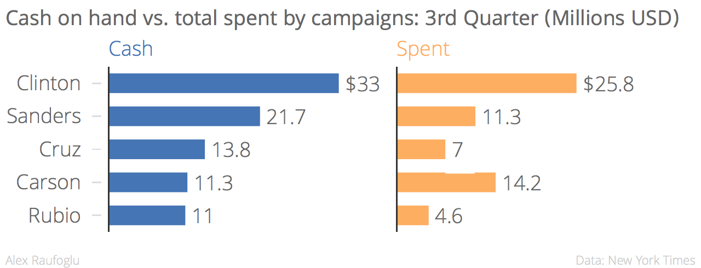

About me

I'm a Washington-based journalist specializing in the Caucasus and wider Black Sea region.
Bio
Since 2008, I've lived in Washington, DC, where I work as a journalist for several media outlets. I cover the U.S. policies on South Caucasus, Eastern Europe, Turkey and the surrounding region. My coverage interests also include Eurasian democracy, rights, media and other freedoms, as well as peace and security. My articles have appeared in the:
From 1999 to 2008, I covered Eurasian politics and security from Ankara, Baku, and Tbilisi, such as the Rose Revolution in Georgia, the Orange Revolution in Ukraine, the Georgian-Russian war, and Turkish-Armenian rapprochement.